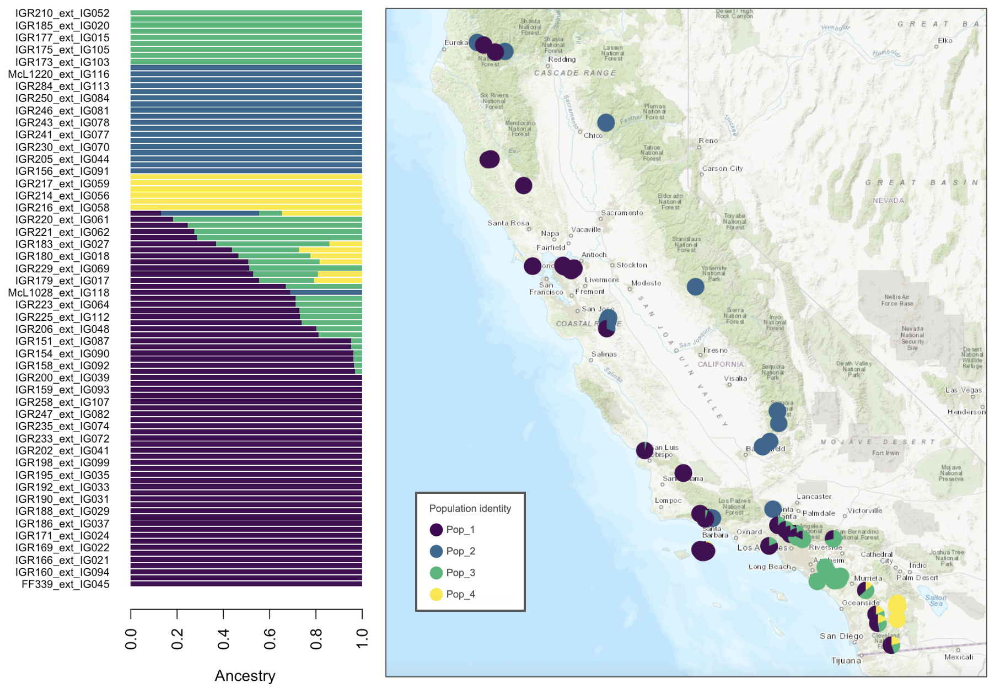

A genomic approach to understand the genetic diversity and population structure of a liverwort species
Written on December 1st , 2024 by Ixchel S. González Ramírez
As part of the California state wide CCGP project (California Conservation Genomics Project), I have been studying the complex thalloid liverwort Calasterella californica for the past three years.
Calasterella californica is a liverwort in the family Aytoniaceae that occurrs in the West Coast of Northamerica, extending from the southern part of Oregon to the North of Baja California. In California, it is one of the most common liverworts, occurring in a wide range of ecosystems, for example from temperate redwood forests to dry deserts.
Due to its importance in California ecosystems, this species was selected as one of the study species in the CCGP project, which aims to understand genetic diversity patterns across California and across a wide range of organisms. While contributing to this project, we aimed to understand some specific question about this species. How is the genetic diversity of this species distributed in space? How is the diversity structure in the context of the complex geology of California? Is this named species really a single clade or are there evolutionary differentiated units?
A reference genome for C. californica
In order to conduct genomic scale studies we need reference genomes. Thus, we constructed a de novo reference genome for C. californica.For this, we grew tissue in vitro from field-colected spores using high quality long-read sequencing. The genome is now a genomic resource publicly available. For more information, check our publication.
Genetic diversity across the geographic space
Liverworts disperse by spores. In comparison to the majority of seeds spores are small and thus are thought to disperse to longer distances. While large ranges are common among liverworts, the spread of the environments in which C. californica occurs raises the question of to what extent the populatios of these species mantain gene flow, and wether or not there is evidence of local adaptation. For this, we used a genomic approachh to characterize the genetic diversity of this species across its geographic range.
Our results suggest a clear pattern of genetic structure that follows a geographic differentiation. In Central and Northern California, there is a genetic divergence between coastal and mountain populations. There is a third region with genetically differentiated individuals occurring towards the Southeast of the state in the Sonora desert region. Southern California samples are characterized by displaying a mix of genetic markers of the other three well differentiated regions. Ongoing work is focused on further analyses to explore mechanistic explanations for this pattern.
 Calasterella californica genetic structure across its geographic range.